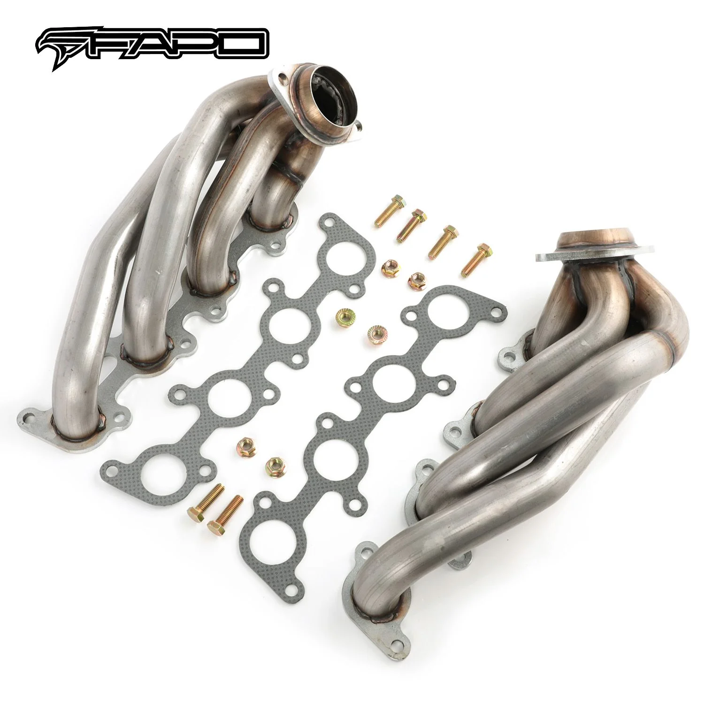

1 / 6FAPO kolektor wydechowy shorty Do Ford F-150 11-14 5.0L V8 1-5/8 wydech MANIFOLD 409SS
Specyfikacja przedmiotu: Stan: nowy Typ kolektora: Kolektor z krótką rurką Długość produktu: krótki Materiał: stal nierdzewna 409 Wykończenie powierzchni: Naturalne Numer części producenta: FE637110 Średnica kolektora: 2-1/2 cala. Średnica części podstawowych: 1-5/8 cala. Grubość rury: 16-miernik (1,5 mm) Grubość kołnierza głowicy: 3/8 cala (9,5 mm) Marka: FAPO Typ dopasowania: Wydajność/Niestandardowe Gwarancja: 1…
Item specifics: Condition: New Manifold Type: Short Tube Header Item Length: Shorty Material: 409 Stainless Steel Surface Finish: Natural Manufacturer Part Number: FE637110 Collector Diameter: 2-1/2 in. Primaries Diameter: 1-5/8 in. Pipe Thickness: 16-gauge (1.5mm) Head Flange Thickness: 3/8 in. (9.5mm) Brand: FAPO Fitment Type: Performance/Custom Warranty: 1 Year Mounting Hardware Included: Yes Connection Type: Bolt On Placement on Vehicle: Front Type: Exhaust Header Substrate Material: 409 Stainless Steel Color: Silver Mounting Style: Bolt-On Manufacturer Warranty: 1 Year Items Included: Gasket, Screw, Mounting Hardware Application: Compatible with 2011-2014 Ford F-150 5.0L V8 Features: Horse Power Gain: +7.87 hp, Torque Gain: +12.03 lbs. x ft. Excellent quality and durability to improve vehicle performance Shorty design for power gain from idle to mid-range RPM Fully mandrel bent tubes made of high quality 16-gauge 409 stainless steel Head flanges laser-cut from high quality 3/8-inch thick steel plates The flange is flattened by a hydraulic press for precise and leak-free sealing All joints are golden color TIG brass style welded to prevent cracking and wear Flanges chrome plated for corrosion resistance Mandrel bent pipes to maintain free flow The accessories in the photos are included 1 year warranty for any manufacturing defect No instructions provided; professional install recommended Technical Specifications: Header Type: Shorty / Short Tube Primary Diameter: 1-5/8 in. Collector Diameter: 2-1/2 in. Head Flange Thickness: 3/8 in. (9.5mm) Pipe Thickness: 16 gauge (1.5mm) Material: 409 Stainless Steel Finish: Natural
1069 PLN
Opis produktu
Specyfikacja przedmiotu:
- Stan: nowy
- Typ kolektora: Kolektor z krótką rurką
- Długość produktu: krótki
- Materiał: stal nierdzewna 409
- Wykończenie powierzchni: Naturalne
- Numer części producenta: FE637110
- Średnica kolektora: 2-1/2 cala.
- Średnica części podstawowych: 1-5/8 cala.
- Grubość rury: 16-miernik (1,5 mm)
- Grubość kołnierza głowicy: 3/8 cala (9,5 mm)
- Marka: FAPO
- Typ dopasowania: Wydajność/Niestandardowe
- Gwarancja: 1 rok
- Elementy montażowe w zestawie: Tak
- Typ połączenia: Przykręcane
- Umieszczenie na pojeździe: Przód
- Typ: Kolektor wydechowy
- Materiał podłoża: stal nierdzewna 409
- Kolor: srebrny
- Sposób montażu: przykręcany
- Gwarancja producenta: 1 rok
Elementy zawarte:
- Uszczelka, śruba, elementy montażowe
Zastosowanie:
- Kompatybilny z Fordem F-150 5.0L V8 z lat 2011-2014
Cechy produktu:
- Przyrost mocy koni: +7,87 KM, przyrost momentu obrotowego: +12,03 funta. x ft.
- Doskonała jakość i trwałość poprawiająca osiągi pojazdu
- Krótka konstrukcja zapewniająca wzrost mocy od obrotów biegu jałowego do średnich obrotów
- Rury w pełni gięte trzpieniowo, wykonane z wysokiej jakości stali nierdzewnej 409 o średnicy 16 mm
- Kołnierze głowicy wycinane laserowo z wysokiej jakości blach stalowych o grubości 3/8 cala
- Kołnierz jest spłaszczany za pomocą prasy hydraulicznej, co zapewnia precyzyjne i szczelne uszczelnienie
- Wszystkie połączenia są spawane metodą TIG w kolorze złotym, aby zapobiec pękaniu i zużyciu
- Kołnierze chromowane, co zapewnia odporność na korozję
- Rury wygięte trzpieniem w celu utrzymania swobodnego przepływu
- Akcesoria widoczne na zdjęciach są wliczone w cenę
- 1 rok gwarancji na wszelkie wady produkcyjne
- Brak instrukcji; zalecana profesjonalna instalacja
Dane techniczne:
- Typ nagłówka: krótka / krótka rurka
- Podstawowa średnica: 1-5/8 cala.
- Średnica kolektora: 2-1/2 cala.
- Grubość kołnierza głowicy: 3/8 cala (9,5 mm)
- Grubość rury: 16 mm (1,5 mm)
- Materiał: stal nierdzewna 409
- Wykończenie: Naturalne
Item specifics:
- Condition: New
- Manifold Type: Short Tube Header
- Item Length: Shorty
- Material: 409 Stainless Steel
- Surface Finish: Natural
- Manufacturer Part Number: FE637110
- Collector Diameter: 2-1/2 in.
- Primaries Diameter: 1-5/8 in.
- Pipe Thickness: 16-gauge (1.5mm)
- Head Flange Thickness: 3/8 in. (9.5mm)
- Brand: FAPO
- Fitment Type: Performance/Custom
- Warranty: 1 Year
- Mounting Hardware Included: Yes
- Connection Type: Bolt On
- Placement on Vehicle: Front
- Type: Exhaust Header
- Substrate Material: 409 Stainless Steel
- Color: Silver
- Mounting Style: Bolt-On
- Manufacturer Warranty: 1 Year
Items Included:
- Gasket, Screw, Mounting Hardware
Application:
- Compatible with 2011-2014 Ford F-150 5.0L V8
Features:
- Horse Power Gain: +7.87 hp, Torque Gain: +12.03 lbs. x ft.
- Excellent quality and durability to improve vehicle performance
- Shorty design for power gain from idle to mid-range RPM
- Fully mandrel bent tubes made of high quality 16-gauge 409 stainless steel
- Head flanges laser-cut from high quality 3/8-inch thick steel plates
- The flange is flattened by a hydraulic press for precise and leak-free sealing
- All joints are golden color TIG brass style welded to prevent cracking and wear
- Flanges chrome plated for corrosion resistance
- Mandrel bent pipes to maintain free flow
- The accessories in the photos are included
- 1 year warranty for any manufacturing defect
- No instructions provided; professional install recommended
Technical Specifications:
- Header Type: Shorty / Short Tube
- Primary Diameter: 1-5/8 in.
- Collector Diameter: 2-1/2 in.
- Head Flange Thickness: 3/8 in. (9.5mm)
- Pipe Thickness: 16 gauge (1.5mm)
- Material: 409 Stainless Steel
- Finish: Natural
FAPO Polska
Ten produkt obsługujemy lokalnie
Autoryzowana obsługa
FAPO Polska prowadzi katalog, kontakt i zamówienia bez odsyłania klienta do zewnętrznych sklepów.
Dobór po aucie
Sprawdzamy dopasowanie produktu do pojazdu, rocznika i wersji przed finalizacją zamówienia.
Wsparcie po zakupie
Masz kontakt w Polsce w sprawach zamówień, wysyłki, gwarancji i zwrotów.